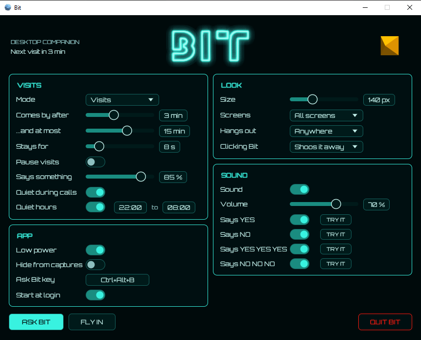

BIT
A tiny desktop companion that visits now and then, hovers, says yes or no, and speeds off.
Download Source codeWhat Bit is
Bit flies over your desktop with no window or background of its own: only Bit itself is drawn. It lives in the system tray, uses no CPU between visits, and makes no network connections at all. Ask it a yes/no question and it answers with one truly random bit.
Download
Get the latest version from the Releases page. Pick the file for your system:
| System | Download |
|---|---|
| Windows 10 / 11 | windows zip, holding tron-bit.exe |
| macOS 11 or later | macos download, holding Bit.app |
| Linux, 64-bit PC | linux download |
| Linux, 64-bit ARM (Raspberry Pi OS 64-bit, Pinebook, Armbian) | linux-arm64 download |
Not sure which Linux one? Run uname -m: x86_64 means linux, aarch64 means linux-arm64.
First run
Windows
Bit isn't signed yet, so Windows blocks it the first time.
- Unzip the download. A good home for
tron-bit.exeis%LOCALAPPDATA%\Programs\Bit\(no admin rights needed). - Right-click
tron-bit.exe, choose Properties, tick Unblock, and click OK. - Double-click it. If SmartScreen warns, click More info, then Run anyway.
Bit appears in the tray (click the ^ arrow by the clock if you don't see it). It starts at login from then on, which you can turn off in Settings.
macOS
Bit runs in the menu bar with no Dock icon. The first time, right-click Bit.app and choose Open, since it isn't signed. macOS is untested so far.
Linux
In a terminal, in the folder you downloaded to (use the file name as downloaded):
tar -xzf tron-bit-0.4.0-linux.tar.gz cd tron-bit-0.4.0-linux ./install.sh --autostart
This needs no sudo. It puts Bit in ~/.local/bin and in your app menu; --autostart also starts it at login. Then start Bit from the app menu.
On small ARM laptops and boards, or if Bit's windows come up black, add --software:
./install.sh --software --autostart
Using Bit
| To do this | Do this |
|---|---|
| Open Settings | Left-click the tray icon |
| Tray menu | Right-click the tray icon: Ask Bit, Show Bit now, Pause visits, Always on, Settings, Quit Bit |
| Ask Bit a question | Think of a yes/no question, then press Ctrl+Alt+B anywhere (or Ask Bit in the tray). Bit flies in, thinks, and answers out loud. |
| Shoo Bit away | Click it while it's on screen |
| Move Bit | Drag it (Windows). Holding it pauses the visit. |
| Keep Bit around | Always on in the tray menu. Double-click Bit to go back to visits. |
Every answer comes from your system's secure random generator, so yes and no are exactly even and can't be predicted. Clicking, dragging and the Ask Bit key are Windows-only for now.
Settings

| Setting | What it does |
|---|---|
| Says something | How often Bit says yes or no on a visit. |
| Screens | All screens, the main one, all but the main one, or Chosen screens picked on a little map. Bit never shows on a screen it's kept off. |
| Mode: Always on | Bit stays on one screen, roaming like it's trapped behind the glass, or hovering in one spot (Movement). Restlessness sets how lively it is. |
| Hangs out | Where on the screen Bit mostly hovers. |
| Clicking Bit | Shoo it (default), ask it, or do nothing (clicks pass straight through). |
| Sound | Volume, plus a switch and TRY IT button for each clip. |
| Ask Bit key | Click it, then hold your new keys. Esc keeps the old key, Delete turns it off. |
| Quiet during calls | No visits while an app uses your microphone (on by default, Windows). |
| Quiet hours | No visits between two times (default 22:00 to 08:00). |
| Hide from captures | Keeps Bit out of screenshots, recordings and screen sharing (Windows). Uses a little more memory. |
| Low power | About 30 frames a second instead of your display's rate (on by default). |
| Start at login | On from the first run (Windows). |
Bit also stays away while a full-screen game or presentation is running (Windows). Settings save by themselves to %APPDATA%\tron-bit\ on Windows, ~/Library/Application Support/tron-bit/ on macOS, and ~/.config/tron-bit/ on Linux.
Is it safe?
- No network. Bit never connects to the internet or sends anything anywhere.
- Built in the open. Every release is built by GitHub from the public source code, not on someone's PC.
- Checksums. Each release includes
SHA256SUMS.txtso you can check your download is exactly what was built. - Antivirus warnings. New, unsigned programs are sometimes flagged just because few people have run them yet. Free code signing is on the way.
Check a download (Windows)
Open PowerShell in the folder you downloaded to, run this, and compare the hash with the matching line in SHA256SUMS.txt:
Get-FileHash .\tron-bit-*-windows.zip
Check a download (macOS / Linux)
sha256sum -c SHA256SUMS.txt --ignore-missing
Stop & uninstall
- Quit: right-click the tray icon and choose Quit Bit. It stops cleanly, saves settings and removes its icon.
- Windows: turn off Start at login in Settings, quit Bit, then delete
tron-bit.exe. To remove settings too, delete%APPDATA%\tron-bit. - macOS: quit Bit and drag
Bit.appto the Trash. - Linux: from the folder you installed from, run the command below. Your settings stay in
~/.config/tron-bit.
./install.sh --uninstall
Help
I can't see Bit's tray icon (Windows)
Click the ^ arrow by the clock. You can drag Bit's icon onto the taskbar to keep it visible.
No tray icon on GNOME / Ubuntu
Install the AppIndicator and KStatusNotifierItem Support extension. KDE shows tray icons out of the box.
Settings window is all black (Linux)
Common on older or small ARM graphics chips. Quit Bit and reinstall with ./install.sh --software --autostart.
Bit flies inside a black square (Linux)
Turn on your desktop's compositor. On XFCE: Settings, Window Manager Tweaks, Compositor, Enable display compositing.
It complains about a missing .so library (Linux)
Install the runtime packages:
sudo apt install libgtk-3-0 libayatana-appindicator3-1 libxdo3
On Fedora: sudo dnf install gtk3 libayatana-appindicator-gtk3 libxdo
Steam Deck, 32-bit ARM, or building it yourself
See the full README for these and the build-from-source steps.